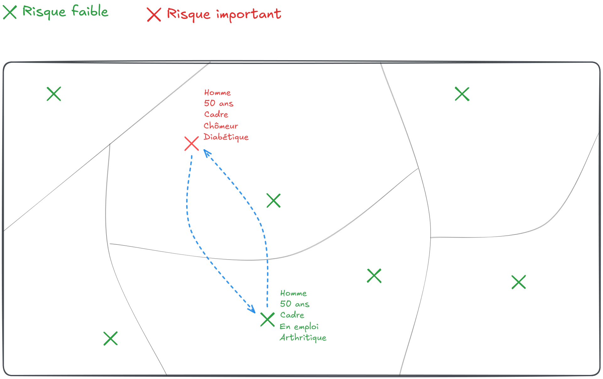
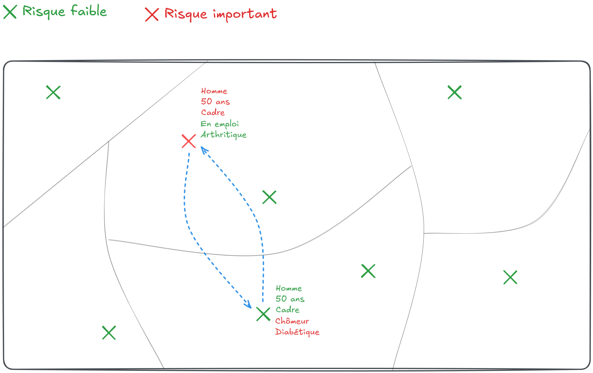
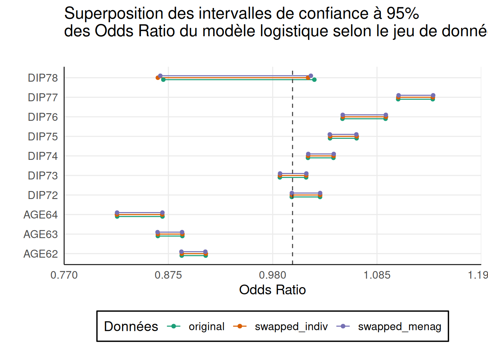

Attaching package: 'dplyr'The following objects are masked from 'package:stats':
filter, lagThe following objects are masked from 'package:base':
intersect, setdiff, setequal, unionLa fiche pratique présente comment appliquer le Target Record Swapping à un jeu de données individuelles afin d’assurer une protection optimale des informations confidentielles des individus (ou ménages ou entreprises) qui le composent.
La première partie s’attache à présenter les différentes étapes à suivre pour que cette application soit pertinente au regard des données utilisées.
La seconde partie montre comment utiliser la fonction sdcMicro::recordSwap() pour appliquer la méthode à un jeu de données dont on aura repérer les individus à risque préalablement.
Pour reproduire les résultats et réaliser les exercices, il est possible de travailler directement sur le datalab de l’Insee. Si vous disposez d’un compte, vous pouvez Ouvrir un service RStudio ou Ouvrir un service vscode R-Python, à votre convenance. Ces services installeront automatiquement les packages nécessaires pour réaliser les exercices de l’ensemble des fiches pratiques.
Le Target Record Swapping (TRS) est une méthode s’appliquant directement sur un jeu de données individuelles pour réduire principalement les risques de ré-identification. Il ciblera donc les individus pour lesquels ce risque est jugé trop élevé, c’est-à-dire
ceux partageant des caractéristiques trop rares sur un ensemble de variables dites quasi-identifiantes. Les variables quasi-identifiantes sont celles qui sont susceptibles d’être déjà publiques ou du moins à la disposition d’un attaquant.
D’où son nom: le swapping, c’est-à-dire l’échange, va concerner des unités de la base (les records) détectés à l’avance, devenant ainsi les cibles (target) sur lesquelles on va se concentrer.
Bien qu’elle soit appliquée sur des microdonnées, la méthode a principalement vocation à protéger la diffusion de données tabulées (Hundepool et al. 2024, section 5.6). Dans ce type d’utilisation, en tant que méthode pré-tabulée, elle permet de produire des tableaux parfaitement additifs.
Après avoir détecté un individu dont le risque de ré-identification est jugé trop élevé, un autre individu est tiré aléatoirement parmi les individus au risque de ré-identification les plus faibles et certaines des caractéristiques de ces deux individus sont échangées (swapped).
Après l’échange, la ré-identification de l’individu est rendue beaucoup plus difficile et ne permet plus d’obtenir d’informations pertinentes à son sujet.
Soit un territoire donné découpé en six zones où résident un certain nombre d’individus. Avec les informations disponibles à leur sujet, on considère qu’un seul individu a un risque de ré-identification trop élevé (croix rouge sur la Figure 1).

On tire alors au hasard un autre individu présent sur le territoire pour échanger certaines de leurs caractéristiques. Ce tirage pourrait être purement aléatoire. Mais, cela conduirait à détruire certaines statistiques bien utiles. Par exemple, en trouvant un individu d’une autre zone partageant certaines caractéristiques (par exemple le sexe, l’âge et la catégorie sociale, Figure 2), on s’assure de conserver les marges sur ces variables au niveau géographique le plus fin.
En revanche, les autres caractéristiques sont bruitées de façon non contrôlée.

Ainsi, l’éventuelle ré-identification de l’individu à risque ne pourrait conduire l’attaquant qu’à obtenir des informations très probablement fausses à son sujet.
La méthode est très souple puisqu’elle permet de s’adapter aux données dont on dispose et aux besoins en termes de diffusion. Les variables de similarité entre individus échangés peuvent ainsi être choisies parmi les variables dont on veut conserver le mieux possible l’information marginale. En effet, en échangeant des individus parfaitement similaires sur certaines caractéristiques (les variables de similarité), l’échange ne produira aucune perte d’information sur celles-ci.
Si l’objectif est de réduire le risque de ré-identification, sélectionner toutes les variables quasi-identifiantes comme variables de similarité ne perturberait aucunement la capacité de l’attaquant à ré-identifier les individus. Ce choix produirait en revanche du bruit sur les autres variables: donc en ré-identifiant, l’attaquant ne serait pas en mesure d’obtenir des informations supplémentaires fiables.
Les données contiennent généralement des informations géographiques. Or, la géographie, en particulier à des niveaux fins, est très identifiante. On choisira en général d’échanger des individus résidant à des endroits différents, en tenant compte du niveau géographique auquel un individu est facilement ré-identifiable.
Par exemple, si un individu est facilement ré-identifiable dans sa commune mais pas dans son département de résidence, alors on privilégiera l’échange avec un autre individu du département en dehors de la commune de notre individu à risque. Si le niveau départemental posait lui aussi problème on remonterait au niveau régional, etc.
Ainsi, en général, la méthode consistera à échanger la localisation d’individus ou de ménages (Longhurst, Tromans, et Young, s. d.).
Une autre souplesse de la méthode est de pouvoir prendre en compte des structures hiérarchiques entre les individus. Par exemple, lorsque le fichier d’individus contient également des informations sur la composition des ménages.
Dans ce cas, l’échange d’individus risque de déstabiliser la composition des ménages concernés, en termes d’âge en particulier: on pourrait voir se créer des ménages où il n’y a aucun individu majeur par exemple.
Une solution consisterait à échanger des ménages entiers plutôt que des individus. Mais cette solution n’est à retenir que si on dispose de suffisamment d’informations sur les ménages pour détecter des ménages similaires de bonne qualité. Si ce n’est pas le cas, il peut être préférable d’échanger des individus et de contrôler d’une autre manière, car un choix judicieux de variables de similarité peut limiter ces désagréments.
Le taux d’échange ou taux de swapping est la part d’individus du jeu de données qui a pris part aux échanges, soit \(s=\frac{E+D}{N}\), où \(E\) est le nombre d’individus à échanger, \(D\) le nombre de donneurs (\(D=E\)) et \(N\) le nombre d’individus dans la base.
En pratique, on fixe un taux de swapping \(s\) de telle sorte que l’algorithme procède à un minimum d’échanges. Si le nombre d’individus à risque ne permet pas d’atteindre ce seuil, des individus supplémentaires seront également échangés pour atteindre \(s\). Sinon, le taux de swapping étant atteint ou dépassé, aucun individu additionnel n’est ajouté.
TRSTRS est une méthode adaptéeL’avantage de la méthode est sa grande capacité d’adaptation aux données dont on dispose. Même si cette fiche va présenter comment l’appliquer avec le package sdcMicro, il est en réalité tout à fait possible de développer son propre algorithme pour affiner la façon de tirer les individus ou les ménages à échanger.
On pourra se reporter à la fiche sur les mesures de risque pour en savoir plus sur les risques et la façon de les mesurer.
Pour installer les packages nécessaires, vous trouverez les instructions à suivre dans la fiche Ressources / Installer les packages et les outils sur R.
Attaching package: 'dplyr'The following objects are masked from 'package:stats':
filter, lagThe following objects are masked from 'package:base':
intersect, setdiff, setequal, unionsource("../R/fun_import_data.R")
lfs_2023 <- import_lfs()head(lfs_2023) REG DEP ARR SEXE AGE AGE6 ACTEU DIP7 PCS1Q ANCCHOM HHID
<fctr> <fctr> <fctr> <fctr> <int> <fctr> <fctr> <fctr> <fctr> <fctr> <int>
1: 28 76 761 1 53 50 1 4 30 99 3558
2: 28 76 761 2 43 25 1 7 52 99 3558
3: 28 76 761 2 17 15 3 5 99 99 3558
4: 28 76 761 1 17 15 3 4 99 99 3558
5: 11 92 922 1 42 25 1 7 62 99 5973
6: 11 92 922 2 54 50 1 7 62 99 5973
HH_TAILLE HH_AGE HH_DIP HH_PCS IS_CHOM
<fctr> <fctr> <fctr> <fctr> <int>
1: 4 53 4 30 0
2: 4 53 4 30 0
3: 4 53 4 30 0
4: 4 53 4 30 0
5: 2 54 7 62 0
6: 2 54 7 62 0Pour plus d’informations sur les données, on pourra se reporter à la fiche “Présentation des données”.
On définit les variables selon les différentes catégories suivantes:
key_vars)sens_vars)hhid_vars)Pour cet exercice, nous ferons les choix suivants:
key_vars <- c("AGE6","SEXE","DEP","DIP7")
sens_vars <- c("ACTEU","ANCCHOM","IS_CHOM")
hhid_vars <- c("HHID")Les comptages par croisement des modalités des variables quasi-identifiantes:
lfs_sdc <- sdcMicro::createSdcObj(
lfs_2023,
keyVars = key_vars
)Le tableau ci-dessous présente le nombre et la part d’individus du fichier ne répondant pas au critère du \(k\)-anonymat, en fonction de la valeur de \(k\).
ks <- 2:10
data.frame(
k = ks,
nb_ind_risk = sapply(ks, \(k) sum(lfs_sdc@risk$individual[,"fk"] < k))
) |>
mutate(part_ind_risk = nb_ind_risk / nrow(lfs_2023) * 100) |>
knitr::kable(digits=1)| k | nb_ind_risk | part_ind_risk |
|---|---|---|
| 2 | 77 | 0.2 |
| 3 | 267 | 0.8 |
| 4 | 465 | 1.4 |
| 5 | 825 | 2.4 |
| 6 | 1105 | 3.2 |
| 7 | 1387 | 4.1 |
| 8 | 1723 | 5.1 |
| 9 | 2075 | 6.1 |
| 10 | 2498 | 7.3 |
On dénombre 77 individus uniques et jusqu’à 7.3% d’individus à risque si nous nous fixons comme objectif de respecter un \(10\)-anonymat dans notre fichier.
Pour traiter les individus à risque, on se propose d’utiliser un targeted record swapping.
risk_variables <- c("AGE6","SEXE","DIP7") # les variables permettant de mesurer le risque de ré-identification
hierarchy <- c("REG", "DEP") # permet de renseigner l'existence d'une hiérarchie entre les var géographiques
carry_along <- c("ARR")
similar <- list( # Contraintes de similarité sur les individus échangés
c("REG","AGE6","SEXE"), # priorité 1
c("AGE6","SEXE"), # priorité 2 ...
c("REG","SEXE"),
c("REG","AGE6"),
"SEXE"
)
hid <- "ID" # swapping d'individusLa fonction de swapping implémentée dans sdcMicro nécessite de transformer toutes les variables en integer.
lfs_2023_pr_swap <- lfs_2023 |>
mutate(across(everything(), as.integer))|>
mutate(ID = 1:n())On choisit de nous fixer comme objectif de traiter tous les individus ne respectant pas le \(5\)-anonymat et d’échanger au moins \(10\)% des individus. Le premier critère consiste à rendre obligatoire l’échange des individus ne respectant le niveau d’anonymat requis. Le second quant à lui fixe un minimum global d’échanges à atteindre.
k_anonymity <- 5
swaprate <- .1lfs_swapped <- recordSwap(
data = lfs_2023_pr_swap,
hid = hid,
hierarchy = hierarchy,
similar = similar,
risk_variables = key_vars,
carry_along = carry_along,
k_anonymity = k_anonymity,
swaprate = swaprate,
return_swapped_id = TRUE,
seed = 123456 # pour la reproductibilité
)Recordswapping was successful!Le taux de swapping réel est légèrement supérieur au taux de swapping demandé 0.1:
ind_risk <- which(lfs_sdc@risk$individual[,"fk"] < 5)
lfs_swapped |> summarise(
part_indiv_risq = mean(ID %in% ind_risk)*100,
tx_swap_reel = mean(ID != ID_swapped) * 100
) part_indiv_risq tx_swap_reel
1 2.422694 11.67004En réalité, un certain nombre d’individus à risque ont été échangés entre eux :
lfs_swapped |>
slice(ind_risk) |>
filter(ID_swapped %in% ind_risk) |>
nrow() /2[1] 85Et quelques individus, ne figurant pas dans la liste des individus à risque, ont également été échangés entre eux:
lfs_swapped |>
filter(ID != ID_swapped) |>
summarise(n_echanges_no_risque = sum(!ID_swapped %in% ind_risk & !ID %in% ind_risk)/2) n_echanges_no_risque
1 1247Le taux d’échange est très différent selon les régions, dépendant du nombre d’individus problématiques en termes de risque de divulgation au sein de chacune d’elles:
lfs_swapped |>
group_by(REG) %>%
summarise(
part_indiv_risq = mean(ID %in% ind_risk)*100,
tx_swap_reel = mean(ID != ID_swapped) *100
) # A tibble: 4 × 3
REG part_indiv_risq tx_swap_reel
<int> <dbl> <dbl>
1 1 1.89 11.1
2 2 3.61 10.9
3 3 2.32 12.2
4 4 12.5 29.5La fonction fait en sorte d’atteindre le taux de swapping souhaité (dans notre cas \(10\%\) dans chacune des régions). Cela explique pourquoi le taux de swapping global observé peut être légèrement supérieur au taux de swapping fixé initialement.
La base de données fournit les informations individuelles de chaque individu dans leur nouvelle localisation.
str(lfs_swapped)Classes 'data.table' and 'data.frame': 34053 obs. of 18 variables:
$ REG : int 2 2 1 2 1 1 1 1 1 3 ...
$ DEP : int 19 19 27 19 28 25 26 21 24 9 ...
$ ARR : int 53 53 79 53 83 73 75 62 70 27 ...
$ SEXE : int 1 2 2 1 1 2 2 1 2 1 ...
$ AGE : int 53 43 17 17 42 54 57 20 17 28 ...
$ AGE6 : int 3 2 1 1 2 3 3 1 1 2 ...
$ ACTEU : int 1 1 3 3 1 1 1 3 3 1 ...
$ DIP7 : int 4 7 5 4 7 7 7 7 7 5 ...
$ PCS1Q : int 4 7 10 10 9 9 7 10 10 8 ...
$ ANCCHOM : int 10 10 10 10 10 10 10 10 10 10 ...
$ HHID : int 3558 3558 3558 3558 5973 5973 6779 4906 4906 1135 ...
$ HH_TAILLE : int 4 4 4 4 2 2 1 2 2 3 ...
$ HH_AGE : int 39 39 39 39 40 40 43 6 6 14 ...
$ HH_DIP : int 4 4 4 4 7 7 7 7 7 5 ...
$ HH_PCS : int 4 4 4 4 9 9 7 10 10 8 ...
$ IS_CHOM : int 0 0 0 0 0 0 0 0 0 0 ...
$ ID : int 1 2 3 4 5 6 7 8 9 10 ...
$ ID_swapped: int 1 2 20669 4 7330 6 7 8 17652 10 ...
- attr(*, ".internal.selfref")=<externalptr> premier_couple <- lfs_swapped |> slice(ind_risk[1]) |>
bind_rows(lfs_swapped |> filter(ID_swapped == ind_risk[1]))premier_couple REG DEP ARR SEXE AGE AGE6 ACTEU DIP7 PCS1Q ANCCHOM HHID
<int> <int> <int> <int> <int> <int> <int> <int> <int> <int> <int>
1: 1 27 79 2 17 1 3 5 10 10 3558
2: 2 19 53 2 23 1 3 2 10 10 7043
HH_TAILLE HH_AGE HH_DIP HH_PCS IS_CHOM ID ID_swapped
<int> <int> <int> <int> <int> <int> <int>
1: 4 39 4 4 0 3 20669
2: 8 43 3 10 0 20669 3On peut remarquer que ces individus ne sont similaires que sur les variables de similarité que sont le sexe et l’âge (AGE6). En revanche, l’échange a eu lieu entre deux individus de régions différentes: l’individu n°3 résidant dans la région \(2\) originellement a été échangé avec un individu résidant dans la région \(1\).
lfs_swap_vs_orig <- lfs_swapped |>
full_join(lfs_2023_pr_swap, by = "ID", suffix = c("_s","_o")) |>
filter(ID != ID_swapped) |>
mutate(
test1 = REG_s == REG_o,
test2 = SEXE_s == SEXE_o,
test3 = AGE6_s == AGE6_o
)
lfs_swap_vs_orig |>
# filter(ID %in% ind_risk) |>
summarise(
prior_reg_sex_age = sum(test1 & test2 & test3),
prior_sex_age = sum(!test1 & test2 & test3),
prior_reg_sex = sum(test1 & test2 & !test3),
prior_reg_age = sum(test1 & !test2 & test3),
prior_reg = sum(test1 & !test2 & !test3),
prior_sex = sum(!test1 & test2 & !test3),
) |>
tidyr::pivot_longer(everything(), names_to = "ordre_priorite", values_to = "NB") # A tibble: 6 × 2
ordre_priorite NB
<chr> <int>
1 prior_reg_sex_age 2494
2 prior_sex_age 1480
3 prior_reg_sex 0
4 prior_reg_age 0
5 prior_reg 0
6 prior_sex 0\(2~494\) individus ont été échangés avec des individus résidant dans la même région, de même sexe et de la même catégorie d’âge. En revanche, \(1~480\) individus (en réalité les individus à risque) ont été échangés avec des individus de même sexe et de même âge, mais résidant en dehors de la région.
Notons que dans cet exemple, tous les individus ayant été échangés avec des individus de même sexe et de même âge, le swapping ne génère pas d’incohérence dans la composition des ménages: leur taille et leur composition adultes/enfants restant parfaitement préservées.
Et si on avait échangé les ménages plutôt que les individus, qu’en aurait-il été ?
similarHH <- list(c("HH_TAILLE", "HH_AGE"), c("HH_TAILLE"), c("HH_AGE"))
lfs_swapped_hh <- recordSwap(
data = lfs_2023_pr_swap,
hid = "HHID", # identifiant des ménages
hierarchy = hierarchy,
similar = similarHH,
risk_variables = risk_variables,
carry_along = carry_along,
k_anonymity = k_anonymity,
swaprate = swaprate,
return_swapped_id = TRUE,
seed = 123456
)Recordswapping was successful!Combien d’individus ont-ils été échangés ?
lfs_swapped_hh |> summarise(tx_swap_reel = mean(HHID != HHID_swapped)*100) tx_swap_reel
1 16.05732On observe que le taux de swapping observé est supérieur au taux observé lorsque l’échange n’est opéré qu’au niveau individuel.
Il est important de mesurer l’effet des traitements opérés sur la qualité des données qui seront transmises auprès du public. La mesure de la perte d’information peut s’opérer sur de nombreuses dimensions possibles. Le mieux est de se focaliser sur les besoins prioritaires en termes de restitution de l’information.
reg_sex_age1 <- lfs_swapped |> count(REG, SEXE, AGE6, name="n_p") |>
left_join(lfs_2023_pr_swap |> count(REG, SEXE, AGE6, name = "n_o"))|>
mutate(n_p = ifelse(is.na(n_p), 0, n_p))|>
mutate(n_o = ifelse(is.na(n_o), 0, n_o))Joining with `by = join_by(REG, SEXE, AGE6)`reg_sex_age2 <- lfs_swapped_hh |> count(REG, SEXE, AGE6, name="n_p") |>
left_join(lfs_2023_pr_swap |> count(REG, SEXE, AGE6, name = "n_o"))|>
mutate(n_p = ifelse(is.na(n_p), 0, n_p))|>
mutate(n_o = ifelse(is.na(n_o), 0, n_o))Joining with `by = join_by(REG, SEXE, AGE6)`Comparons pour les deux swappings (individus et ménages) l’écart absolu moyen du tableau croisant le niveau régional, le sexe et l’âge des individus:
data.frame(
mad_swap_indiv = mean(abs(reg_sex_age1$n_p - reg_sex_age1$n_o)),
mad_swap_menag = mean(abs(reg_sex_age2$n_p - reg_sex_age2$n_o))
) mad_swap_indiv mad_swap_menag
1 0.9473684 13.57895La conservation des marges régionales SEXE*AGE est de très bonne qualité dans le premier cas. En revanche, dans le cas d’un swapping de ménages, ces marges ont été plus fortement modifiées. Cela s’explique par le fait que dans le premier cas, les trois variables (région, sexe et age) font partie des variables de similarité, mais pas dans le second.
En comparant les distributions entre elles, on observe qu’elles sont très proches, excepté pour la région \(4\), région plus petite et contenant le plus d’individus à risque.
reg_sex_age1 |>
full_join(reg_sex_age2 |> select(-n_o) |> rename(n_sm = n_p), by=c("REG","SEXE","AGE6")) |>
tidyr::pivot_longer(n_p:n_sm, names_to = "type", values_to = "n") |>
mutate(n = ifelse(is.na(n), 0, n)) |>
mutate(type = case_when(type == "n_o"~"original",type=="n_p"~"swap_ind",TRUE~"swap_men")) |>
ggplot() +
geom_bar(aes(x=AGE6, y=n, fill=type), stat = "identity", position = "dodge") +
scale_fill_brewer("data", palette = 7, type="qual") +
facet_grid(REG~SEXE, scales="free", label = "label_both") +
ggtitle("Distributions par sexe, âge et région, selon les données utilisées") +
theme_minimal()
Testons un autre tableau, en prenant une variable qui n’a pas été sélectionnée parmi les variables de similarité.
reg_sex_dip1 <- lfs_swapped |> count(REG, SEXE, DIP7, name="n_p") |>
left_join(lfs_2023_pr_swap |> count(REG, SEXE, DIP7, name = "n_o")) |>
mutate(n_p = ifelse(is.na(n_p), 0, n_p))|>
mutate(n_o = ifelse(is.na(n_o), 0, n_o)) |>
mutate(diff_abs = abs(n_p - n_o)) |>
mutate(diff_rel = ifelse(n_o > 0, diff_abs/n_o*100, (n_p>0)*100))Joining with `by = join_by(REG, SEXE, DIP7)`reg_sex_dip2 <- lfs_swapped_hh |> count(REG, SEXE, DIP7, name="n_p") |>
left_join(lfs_2023_pr_swap |> count(REG, SEXE, DIP7, name = "n_o")) |>
mutate(n_p = ifelse(is.na(n_p), 0, n_p))|>
mutate(n_o = ifelse(is.na(n_o), 0, n_o)) |>
mutate(diff_abs = abs(n_p - n_o)) |>
mutate(diff_rel = ifelse(n_o > 0, diff_abs/n_o*100, (n_p>0)*100))Joining with `by = join_by(REG, SEXE, DIP7)`data.frame(
mad_swap_indiv = mean(abs(reg_sex_dip1$n_p - reg_sex_dip1$n_o)),
mad_swap_menag = mean(abs(reg_sex_dip2$n_p - reg_sex_dip2$n_o))
) mad_swap_indiv mad_swap_menag
1 6.173913 12.26087reg_sex_dip1 |>
full_join(reg_sex_dip2 |> select(-n_o) |> rename(n_sm = n_p), by=c("REG","SEXE","DIP7")) |>
tidyr::pivot_longer(n_p:n_sm, names_to = "type", values_to = "n") |>
mutate(n = ifelse(is.na(n), 0, n)) |>
mutate(type = case_when(type == "n_o"~"original",type=="n_p"~"swap_ind",TRUE~"swap_men")) |>
ggplot() +
geom_bar(aes(x=DIP7, y=n, fill=type), stat = "identity", position = "dodge") +
scale_fill_brewer("data", palette = 7, type="qual") +
facet_grid(REG~SEXE, scales="free", label = "label_both") +
ggtitle("Distributions par sexe, diplôme et région, selon les données utilisées") +
theme_minimal()
On se propose de comparer les intervalles de confiance des coefficients d’un modèle logistique pour évaluer la perte d’information engendrée par le swapping. L’idée est de tester les limites d’utilisation du jeu de données traité par les futurs utilisateurs.
source("../R/fun_cio.R")Étudions la stabilité d’un modèle relativement simple, cherchant à expliquer le fait d’être au chômage par différentes variables à notre disposition: l’âge, le diplôme et le sexe.
On entraînera ce modèle uniquement sur la population active. On retire donc notamment la population étudiante et retraitée.
lfs_2023_pr_glm <- lfs_2023_pr_swap |> mutate(across(-IS_CHOM, as.character))
lfs_pert_pr_glm <- lfs_swapped |> mutate(across(-IS_CHOM, as.character))
lfs_pert_hh_pr_glm <- lfs_swapped_hh |> mutate(across(-IS_CHOM, as.character))
m_original <- glm(IS_CHOM ~ REG + SEXE + AGE6 + DIP7, data = lfs_2023_pr_glm |> filter(ACTEU != 3))
m_swapped <- glm(IS_CHOM ~ REG + SEXE + AGE6 + DIP7, data = lfs_pert_pr_glm |> filter(ACTEU != 3))
m_swapped_hh <- glm(IS_CHOM ~ REG + SEXE + AGE6 + DIP7, data = lfs_pert_hh_pr_glm |> filter(ACTEU != 3))
mes_modeles <- list(
"original" = m_original,
"swapped_indiv" = m_swapped,
"swapped_menag" = m_swapped_hh
)
all_cios <- get_all_confints(mes_modeles)Joining with `by = join_by(vars)`graph_cios(
all_cios |> filter(substr(vars, 1, 4) %in% c("DEP1","AGE6","DIP7")), titre = "Superposition des intervalles de confiance à 95%\ndes Odds Ratio du modèle logistique selon le jeu de données") 
Le modèle conduit aux mêmes conclusions quelque soit les traitements opérés que celles tenues àpartir du jeu original. Dans ce cas simple, la perturbation rend possible une analyse statistique multivariée.
Comparer la perte d’information de différents taux de swapping ou de différents niveaux d’anonymité. Vous utiliserez la mesure de perte d’information que vous souhaitez.
params <- expand.grid(
k_anonymity = 2:10,
swaprate = 0.1,
KEEP.OUT.ATTRS = FALSE,
stringsAsFactors = FALSE
) |>
as.data.frame()
set.seed(123456)
map_ru <- purrr::map(
seq_along(params$k_anonymity),
\(i){
k <- params$k_anonymity[i]
s <- params$swaprate[i]
data_swapped <- recordSwap(
data = lfs_2023_pr_swap,
hid = "ID",
hierarchy = hierarchy,
similar = similar,
risk_variables = risk_variables,
carry_along = carry_along,
k_anonymity = k,
swaprate = s,
return_swapped_id = TRUE
# seed = 123456 # pour la reproductibilité
)
dep_sex_dip_pcs <- data_swapped |> count(DEP, SEXE, DIP7, PCS1Q, name="n_p") |>
left_join(lfs_2023_pr_swap |> count(DEP, SEXE, DIP7, PCS1Q, name = "n_o")) |>
mutate(n_p = ifelse(is.na(n_p), 0, n_p))|>
mutate(n_o = ifelse(is.na(n_o), 0, n_o)) |>
mutate(diff_abs = abs(n_p - n_o)) |>
mutate(diff_rel = ifelse(n_o > 0, diff_abs/n_o*100, (n_p>0)*100))
return(
data.frame(
k = k,
s = s,
sr_reel = as.numeric(data_swapped |> summarise(mean(ID != ID_swapped)) * 100),
mdr = mean(dep_sex_dip_pcs$diff_rel)
)
)
}
) |>
purrr::list_rbind()map_ru |>
ggplot() +
geom_point(aes(x=mdr, y=k), color = "forestgreen") +
labs(x = "Ecart relatif moyen (en %)", y = "Niveau d'anonymité") +
scale_x_continuous(limits = c(1,1.6), expand = c(0,0)) +
ggtitle(
"Protection vs Perte d'information",
subtitle =
"Le niveau de protection est mesuré le niveau d'anonymat et
la perte d'information par l'écart relatif moyen observé
dans le tableau DEP*SEXE*DIP*PCS") +
theme_minimal()
Comment définir des individus similaires ?
La similarité entre deux individus peut être envisagée de deux manières:
La première option nécessite d’utiliser uniquement des variables catégorielles, quitte à créer des classes pour les variables continues qu’on souhaiterait inclure dans la liste.
Dans la pratique, cette première option est la moins gourmande en ressources de calcul, car elle ne nécessite pas de calculer une distance entre chaque receveur et chaque donneur potentiel. Elle est probablement la seule envisageable si le jeu de données contient plusieurs millions de lignes.
Si nous disposons d’un échantillon, chaque individu dispose d’un poids de sondage. Avec le
Target Record Swapping, on prend le risque d’échanger deux individus avec des poids très différents et de déséquilibrer des agrégats importants. Pour éviter ce genre de désagrément, il est possible d’ajouter le poids parmi les variables de similarité, sous la forme d’un arrondi à l’unité ou bien de tranches de valeurs. On pourra également exclure des donneurs potentiels, les individus ayant des poids très élevés comparés aux autres. Ceci permettra de limiter les déformations des distributions.